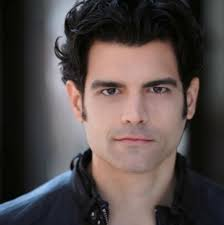
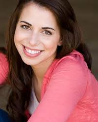
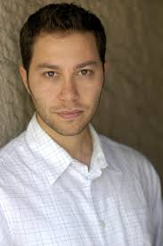
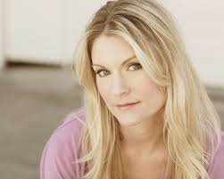
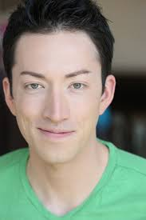
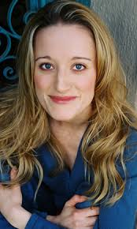

In this section, you get a glimpse of who these people are. But, to provide some context behind voice acting, let's breakdown the term.
It is a form of acting that utilizes the technique of using your voice to give life to a fictional character in any form of media.
Below are a few notable faces that are excellent at what they do.

Jason Griffith is a voice actor born on November 29, 1981 in Lakeline, OH. He lives in New York for his work as a voice actor. He is also the chief director's personal favorite voice actor.
His most famous role as a voice actor is Sonic the Hedgehog, starting from 2005 to 2010. He is also the English voice for Jin Kanzaki from the anime show Zetman.
Griffith will provide his voice as Vincent Reyes starting in Sword Masters I: Dawn of Beginnings.

Laura Bailey is a voice actress born on May 28, 1981 in Biloxi, MS. She resides with her husband, fellow voice actor Travis Willingham in Los Angeles, CA.
Her most well known roles are as Maka Albarn in Soul Eater, Tohru Honda in Fruit's Basket, Lust in Fullmetal Alchemist, Blaze the Cat in the Sonic the Hedgehog series, and Shin Nohara in Crayon Shin-Chan.
Bailey will provide the voice of Luna Tachibana starting in Sword Masters III: Devil's Ballad.

Sam Riegel is a voice actor born on October 9, 1976 in Washington, D.C. His sister is fellow voice actress, Eden Riegel.
His most well known roles are as Flynn Scifo in Tales of Vesperia, Mephisto Pheles in Blue Exorcist, and Phoenix Wright in the Ace Attorney series.
Riegel will provide the voice of Kori Crystelle starting in Sword Masters Revolution.

Kate Higgins is a voice actress born on August 16, 1969 in Charlottesville, VA. She won a People's Choice Award in 2018 for Lead Female Vocal Performance as Sailor Mercury in Sailor Moon.
Her most well-known roles are as C.C in Code Geass, Nanako Kuroi in Lucky Star, and Sakura Haruno in Naruto.
Higgins will provide the voice of Yuki Tabane starting in Sword Masters Team Triage.

Todd Haberkorn is a voice actor born on August 16, 1982. His favorite voice roles are as Natsu Dragneel in Fairy Tail and Keroro in Sgt. Frog.
His other well-known roles are as Rowen J. Ilbert in Tales of Xillia and Allen Walker in D. Gray Man.
Haberkorn will provide the voice as Kiyomi Arashikage starting in Sword Masters I: Dawn of Beginnings.

Jen Taylor is a voice actress born on February 17, 1969 in Seattle, WA. Her famous voice role of all time is Cortana from the Halo franchise.
Her other roles include Princess Peach in the Mario franchise, Catherine Halsey in the Halo franchise, and Zoey in Left 4 Dead.
Taylor will provide the voice of Terra Yellowtail starting in Sword Masters Regal Dissent.